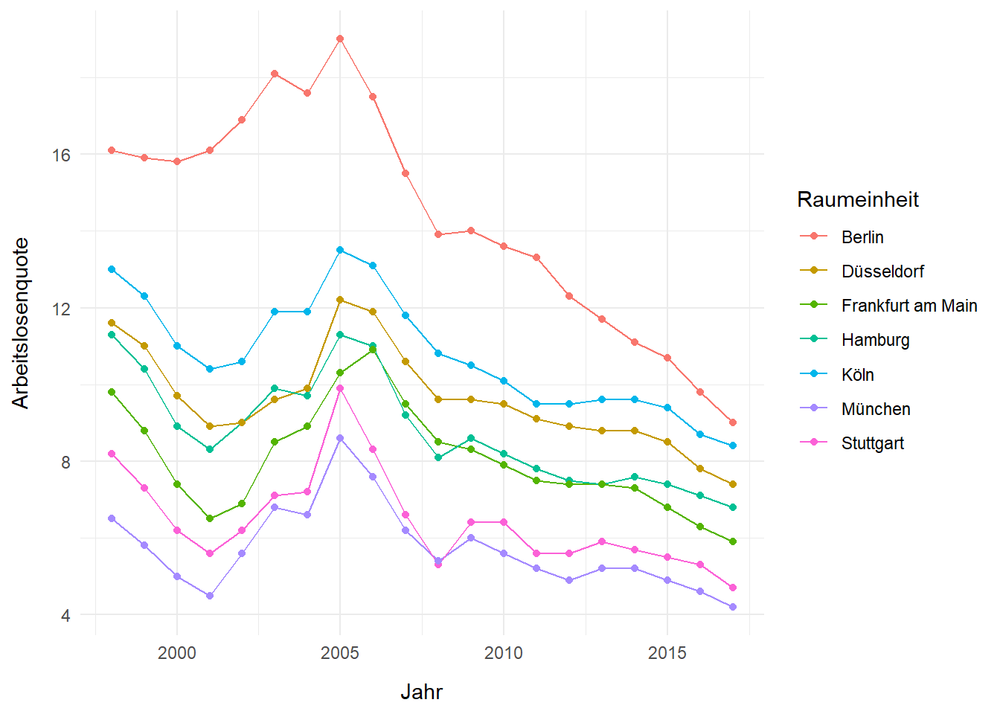
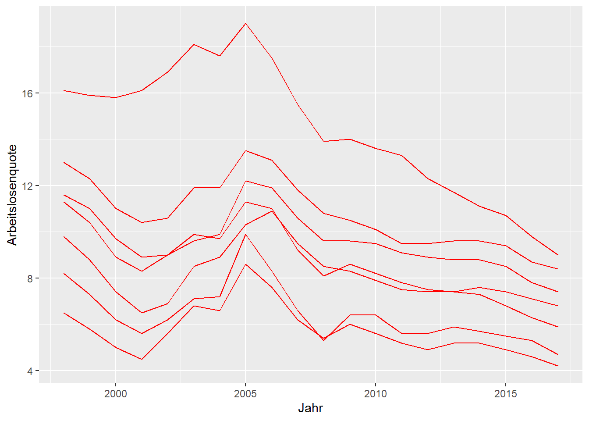

htmlwidgetsJavaScript ist eine weit verbreitete Skriptsprache. Sie wird für dynamische Webseiten (html) genutzt. Mit dem htmlwidgets-Paket können R-Befehle mit zahlreichen interaktiven JavaScript-Bibliotheken verbunden werden.
Es gibt eine Vielzahl an JavaScript-Bibliotheken, die interaktive Komponenten, in unserem Fall Abbildungen, sogenannte widgets erstellen. In der htmlwidgets for R-gallery sind diese gesammelt.
Interaktive Abbildungen können zum Beispiel
plotlyWir arbeiten zunächst mit dem Paket plotly. Dieses verbindet R-Befehle mit der Plotly JavaScript Open Source Graphing Library.
In der Plotly R Open Source Graphing Library finden sich zahlreiche Beispiele und R-Code-Schnippsel.
Grundsätzlich gibt es zwei Herangehensweisen, um mit plotly in R zu arbeiten:
Transformieren eines ggplot2-Objekts in ein plotly-Objekt mit ggplotly() oder
Direktes Erstellen eines plotly-Objekts via plot_ly(), plot_geo() oder plot_mapbox().
## # A tibble: 9,223 x 9
## Kennziffer Raumeinheit Aggregat Jahr Arbeitslosenquo~ Wahlbeteiligung
## <chr> <chr> <chr> <dbl> <dbl> <dbl>
## 1 01001 Flensburg,~ krsfr. ~ 1998 14.6 75.8
## 2 01001 Flensburg,~ krsfr. ~ 1999 13 NA
## 3 01001 Flensburg,~ krsfr. ~ 2000 11.8 NA
## 4 01001 Flensburg,~ krsfr. ~ 2001 12.1 NA
## 5 01001 Flensburg,~ krsfr. ~ 2002 12.1 73.9
## 6 01001 Flensburg,~ krsfr. ~ 2003 13.7 NA
## 7 01001 Flensburg,~ krsfr. ~ 2004 14 NA
## 8 01001 Flensburg,~ krsfr. ~ 2005 18.3 72
## 9 01001 Flensburg,~ krsfr. ~ 2006 15.4 NA
## 10 01001 Flensburg,~ krsfr. ~ 2007 12.5 NA
## # ... with 9,213 more rows, and 3 more variables: Durchschnittsalter <dbl>,
## # BIP <dbl>, Stadt_Land <dbl>Wir erstellen zunächst wieder eine statische Abbildung, aus der wir eine interaktive Abbildung machen wollen. Wir weisen diese einem R-Objekt zu.
(statische_Abbildung <- Landkreise_merged %>%
filter(!is.na(Arbeitslosenquote)) %>%
filter(Raumeinheit %in% c("Berlin, Stadt", "Stuttgart, Stadt", "Düsseldorf, Stadt", "Hamburg, Stadt", "Frankfurt am Main, Stadt", "München, Stadt", "Köln, Stadt")) %>%
mutate(Raumeinheit = gsub("(.*),.*", "\\1", Raumeinheit)) %>% #Text ab Komma entfernen, optional
ggplot(aes(x = Jahr, y = Arbeitslosenquote, color = Raumeinheit)) +
geom_line() +
geom_point()
)
Um aus der statischen Abbildung eine interaktive zu machen, braucht es lediglich eines Befehls. Der Befehl ggplotly() übernimmt die Eigenschaften des statischen Plots und versieht diese mit einer Benutzeroberfläche, Mouseover, etc. Wird kein Objekt innerhalb ggplotly() angegeben, so wird das zuletzt erstellte ggplot2-Objekt in ein plotly-Objekt überführt.
plotlyStatische Abbildung:
(statische_Abbildung_frames <- Landkreise_merged %>%
filter(!is.na(Arbeitslosenquote)) %>%
filter(Raumeinheit %in% c("Berlin, Stadt", "Stuttgart, Stadt", "Düsseldorf, Stadt", "Hamburg, Stadt", "Frankfurt am Main, Stadt", "München, Stadt", "Köln, Stadt")) %>%
mutate(Raumeinheit = gsub("(.*),.*", "\\1", Raumeinheit)) %>% #Text ab Komma entfernen, optional
ggplot(aes(x = Jahr,
y = Arbeitslosenquote)) +
geom_line(aes(group = Raumeinheit)) +
geom_line(aes(frame = Raumeinheit), color = "red")
)
Interaktive animierte Abbildung:
Der Titel für die Frames kann angepasst werden:
statische_Abbildung_frames %>%
ggplotly() %>%
animation_slider(
currentvalue = list(prefix = "Stadt: ", font = list(color="red")))Wir speichern diese interaktive Animation als html-Datei. Dazu wird zunächst ein Objekt erstellt.
final <- statische_Abbildung_frames %>%
ggplotly() %>%
animation_slider(
currentvalue = list(prefix = "Stadt: ", font = list(color="red")))Und mit dem Befehl saveWidget() aus dem Paket htmlwidgets gespeichert.
#install.packages("htmlwidgets")
library(htmlwidgets)
htmlwidgets::saveWidget(final, "final.html", selfcontained = T)